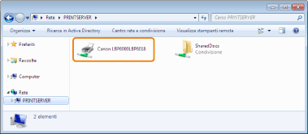

|
|
|
|---|
|
Soluzione
|
Registrare l'utente del computer da utilizzare o specificare la password del server di stampa.
Per ulteriori dettagli rivolgersi all'amministratore di rete.
|
|
Soluzione 1
|
Controllare le stampanti nel server di stampa.

Se l'icona di questa stampante non è visualizzata
Rivolgersi all'amministratore di rete per chiarimenti sul problema.
Se l'icona di questa stampante è visualizzata, procedere come segue
È possibile installare il driver della stampante eseguendo una delle procedure seguenti e attenendosi alle istruzioni visualizzate.
Fare doppio clic sull'icona di questa stampante
Trascinare l'icona di questa stampante nella cartella delle stampanti
|
|
Soluzione 2
|
Per specificare direttamente il percorso di rete, controllare che il percorso sia stato impostato correttamente in questo modo: "\\nome del server di stampa (nome computer del server di stampa)\nome stampante".
|